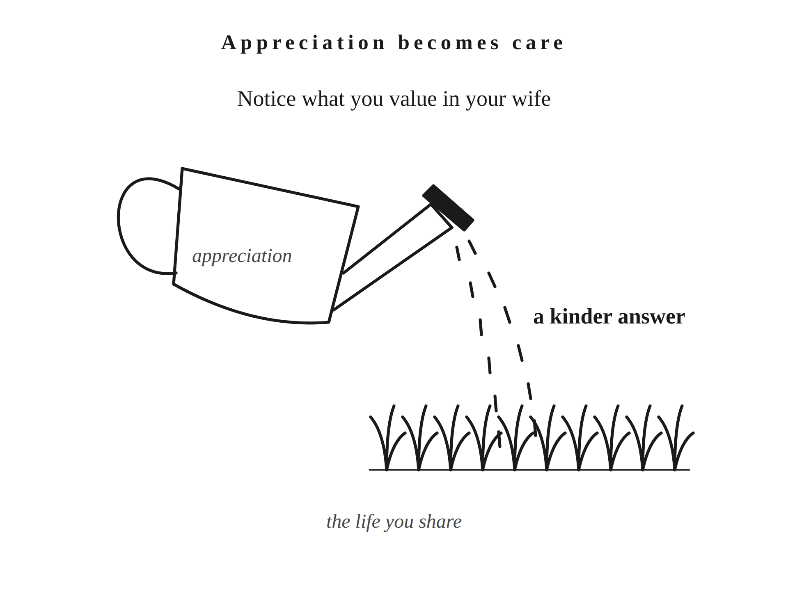

You can love your wife and struggle to remember the last thing about her you stopped to enjoy. You know what needs doing. Ask what you appreciate about her today, and you might need a minute.
That pause doesn’t mean you don’t care. When you share a life, there’s a lot to keep track of. You notice the appointment nobody made, the expense you weren’t expecting, the habit that still annoys you. The things going well don’t ask for your attention quite so loudly. Your wife can become so familiar that you recognize her complaints faster than her kindness.
My wife is a light sleeper. She hears something at night and wakes me to check it. She’s also a morning person who gets the household up. She saves small things I’d throw away, sometimes retrieving them from the trash. We bicker about those things. I love her frugality, and we still disagree about what needs keeping.
She’s getting gray hairs. She doesn’t want other people to see them. I love them. She was a highly paid executive. Now she’s taken a sabbatical, a break from her career, to be a full-time mother. Her income has changed. Her body has changed. Mine has too. She is enough for me.
Enough doesn’t mean I enjoy being woken up. It means I see more of her than the interruption to my sleep.
You have your own details. Maybe your wife remembers what matters to someone who’s having a hard time. Maybe she can make you laugh when you’ve been taking yourself too seriously. Name something true about her. Remember, too, something you value about the history you’ve built together. Stay with that particular thing long enough to remember why you value it. You don’t need to improve her in your imagination before you can appreciate her in your life.
Comparison makes this harder. You meet someone who’s funny, and suddenly your wife’s humor is under review. Someone else earns more. Another woman looks different. You know very little about any of them. But the one thing you’ve noticed becomes a new condition your wife needs to meet. You could keep adding conditions for years.
She could do the same to you. Somewhere there’s a man who earns more, another who’s more patient, another who makes her laugh. You’d want her to remember the whole of you. That same fairness belongs in the way you see her.
In Letter 16, the Stoic philosopher Seneca credits Epicurus for distinguishing natural needs from wants shaped by opinion. Seneca then asks whether a desire has a stopping point. Their subject isn’t marriage, but you can apply Seneca’s question here. Would getting what you want satisfy you, or would you immediately want something else? If your wife met today’s condition, would you let yourself enjoy her? Or would you find the next thing she lacks?
You can notice beauty or wit without making either a complaint about your marriage. A passing attraction doesn’t require a long argument with yourself. You can acknowledge what caught your attention and choose what deserves more of it. Your wife doesn’t need to win another comparison before you treat her with affection.
What are you going to give your attention to?
The Stoic philosopher Marcus Aurelius offers a practice in Meditations VI.48: “When thou wishest to delight thyself, think of the virtues of those who live with thee”.
Think about the good qualities of the people already near you. That gives your mind an actual task. You aren’t ordering yourself to feel satisfied. You’re recalling something worth being glad about, something familiarity may have made easy to overlook.
This is the discipline of enough: practicing appreciation for the real person you’ve chosen. Your attention, your gratitude, and the care you give her are things you can work on. You don’t have to wait until you’re restless to begin.
The research gives some support to practicing gratitude rather than waiting for it. Robert Emmons and Michael McCullough explored this in a 2003 paper. Its title is “Counting blessings versus burdens: An experimental investigation of gratitude and subjective well-being in daily life.” They asked people to record things they were grateful for. People reported improvements in some aspects of how they felt, compared with certain groups given different tasks. The results varied. These weren’t experiments proving that gratitude creates a contented marriage. They give us a reason to take deliberate attention seriously.
You can try it with something small enough to be honest. Before you go to bed, write down one thing you valued about your wife that day. Her patience with a child. Her excitement about something she’s learning. The way she told you the truth when it would’ve been easier to agree. Choose what you actually noticed, rather than filling the page with qualities a good wife is supposed to have.
If nothing comes to mind, give yourself a chance to notice tomorrow. You haven’t failed an exercise. Tomorrow, pay attention to something you value about her. And if you’re upset with her, you don’t have to pretend the hurt disappeared. There may still be something you appreciate alongside it.
Then let some of that appreciation reach her. Tell her what you saw and why it mattered to you. Be specific enough that she knows you paid attention. If you enjoy hearing about something she’s learning, tell her what you like about her curiosity. You can thank her for what she does. You can also enjoy things about her that do nothing for you. Her curiosity belongs to her. So does the pleasure she takes in getting good at something. You get to love a person whose life includes more than meeting your needs.
“The grass is greener where you water it” is a saying I keep coming back to. I don’t know who first said it. The attention matters because it gives you something real to appreciate. The appreciation matters because it can become a kinder answer, a sincere compliment, or time spent enjoying her company. Keep doing that on ordinary days, before dissatisfaction makes it feel urgent.
You may have been saying you want to feel closer. How much thought have you given to what you already enjoy together? Let yourself enjoy it when it happens. Stay in the conversation because you like talking to her. Laugh without immediately returning to what needs doing. There’s room in a responsible life to be glad she’s part of it.
Enough also asks you to keep caring for yourself. Your health still deserves effort. So does the marriage. Contentment doesn’t settle a concern that needs an honest conversation, and gratitude doesn’t make recurring hurt harmless. I don’t have a fixed rule for when appreciation is enough and when you need to speak. That takes judgment, and sometimes a difficult conversation. You can love who she is while taking a problem seriously.
Nor does any of this require her to answer your affection on your schedule. If you tell her what you appreciate, let it be true even when she’s tired or distracted. You valued something about her before you spoke. Her response doesn’t have to justify having noticed it.
That’s harder when your affection includes desire. You can be glad she’s your wife and still feel hurt when you reach for her and hear no. Contentment won’t spare you that feeling. Her answer doesn’t have to decide your self-respect. You’ll have to decide how to treat her while you feel it.
Keep tending the life you share, including on the days it gives you nothing new to admire.

Putting into Practice
Mechanism: Appreciation becomes care
Conversation sentence: You practice enough by noticing what you value in your wife and letting that appreciation change how you care for her.
Familiarity can make complaints easier to notice than good qualities. Comparison adds new conditions a real person cannot keep meeting. Give your attention a different task: name something you value about the woman your wife is now. Let yourself enjoy it, tell her, and let that appreciation become care on ordinary days. Her changing body, work, and habits belong to the person you love. Gratitude leaves room for honest concerns and care for your own health. It asks for no particular response from her.
Lesson: Contentment grows through practiced attention and appreciation for the real person you chose.
Challenge: Name one thing you appreciate about your wife today and tell her why it matters to you, without adding a request.